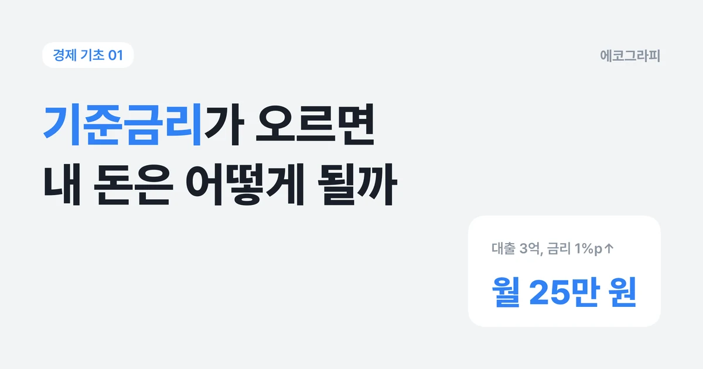
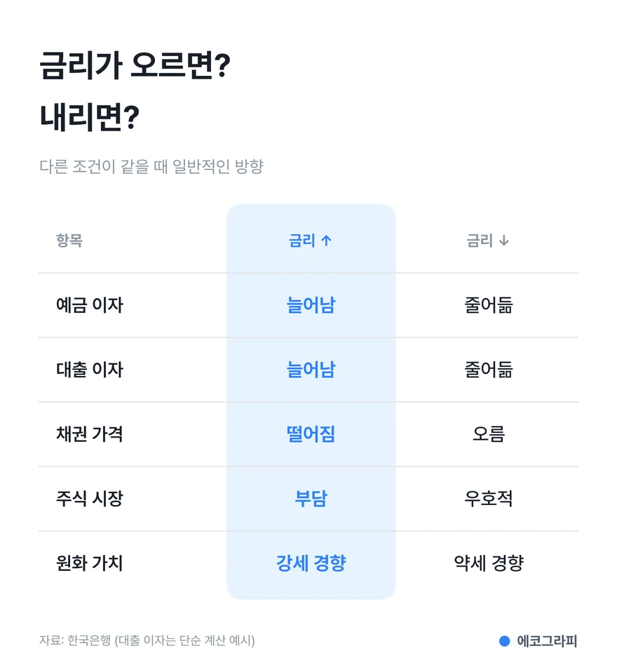
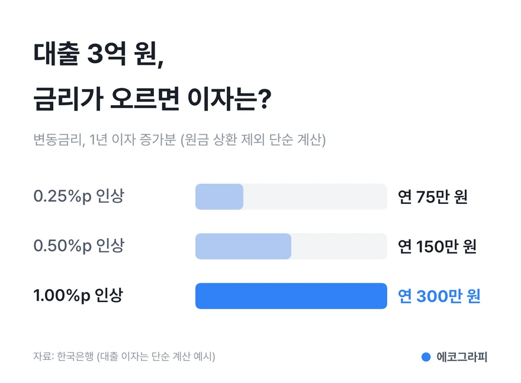
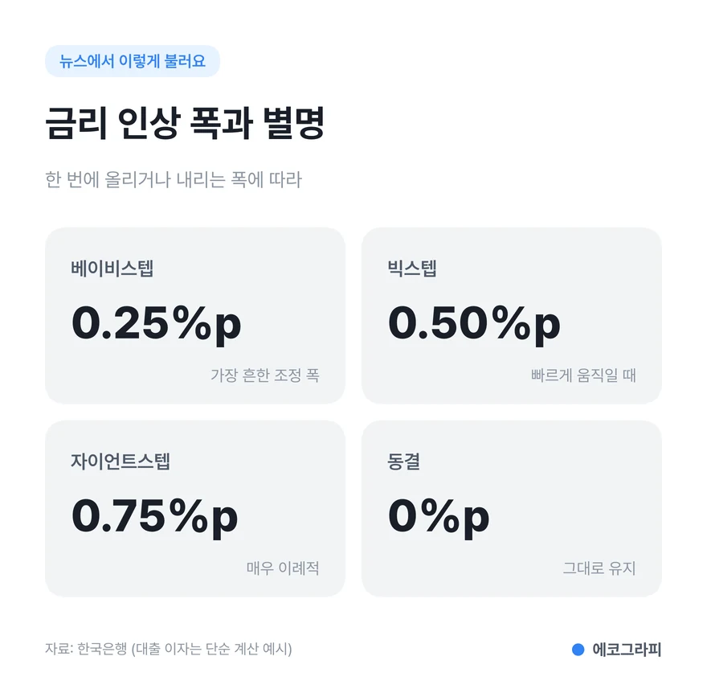
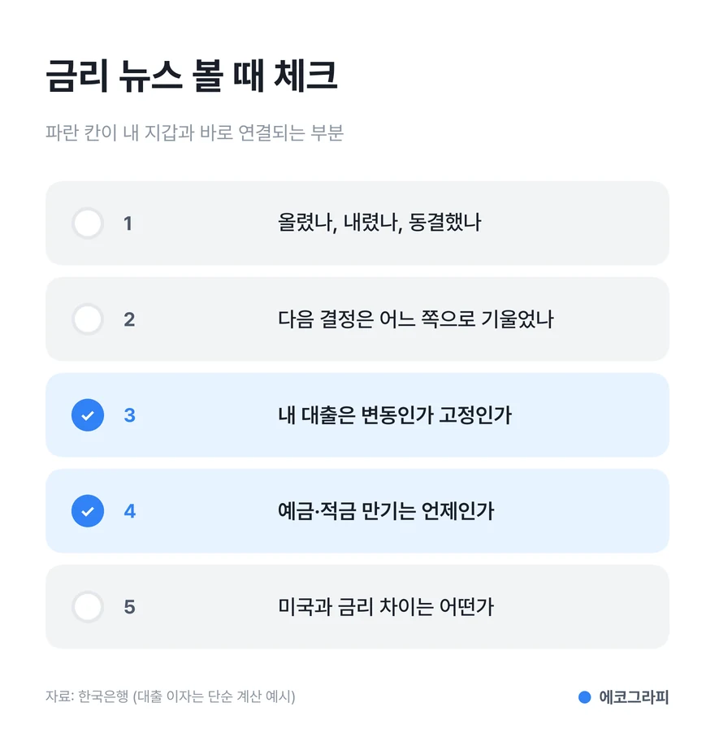

기준금리는 한국은행이 금융기관과 돈을 주고받을 때 쓰는 기준이 되는 금리예요. 한국은행 금융통화위원회가 1년에 8번 회의를 열어 올릴지, 내릴지, 그대로 둘지 정합니다.
은행들은 이 금리를 바탕으로 예금 금리와 대출 금리를 정해요. 그래서 기준금리가 움직이면 시차를 두고 내 통장과 대출 이자까지 따라 움직입니다.
왜 올리고 내릴까? 물가가 너무 오르면 금리를 올려 돈이 덜 돌게 하고, 경기가 너무 식으면 금리를 내려 돈이 더 돌게 해요. 수도꼭지를 조이고 푸는 것과 비슷합니다.

변동금리 대출은 일정 주기마다 금리가 다시 정해져요. 계산은 간단합니다. 대출 잔액 × 금리 변화폭이 1년 동안 늘어나는 이자예요.

3억 원을 빌렸다면 0.25%p만 올라도 1년에 75만 원, 1%p면 300만 원(월 25만 원)이 늘어요. 원금을 같이 갚는 방식이라면 실제 금액은 조금 다르지만 크기는 비슷합니다.
지금 해볼 것: 대출 앱에서 내 대출이 변동·고정·혼합형 중 무엇인지, 다음 금리 변경일이 언제인지 확인해 보세요.

| 용어 | 뜻 |
|---|---|
| 매파 (Hawkish) | 물가를 잡으려고 금리 인상에 적극적인 쪽 |
| 비둘기파 (Dovish) | 경기를 살리려고 금리 인하에 우호적인 쪽 |
| 피벗 (Pivot) | 금리 방향을 바꾸는 것 (인상 → 인하 등) |
| 점도표 | 미국 연준 위원들의 금리 전망을 점으로 찍은 표 |
| 한미 금리차 | 한국과 미국 기준금리의 차이. 환율에 영향 |

변동금리는 정해진 변경 주기(보통 3·6·12개월)에 반영돼요. 고정금리는 고정 기간 동안 그대로입니다.
오를 것 같다면 짧게, 내릴 것 같다면 길게 가입하는 게 일반적인 전략이에요. 다만 예측은 틀릴 수 있어요.
달러는 전 세계 돈의 기준이라 미국 금리가 움직이면 환율·주식·채권 시장이 같이 움직여요.
3%에서 3.5%로 오르면 0.5%p(퍼센트포인트) 올랐다고 해요. 퍼센트로 말하면 약 16.7% 오른 거예요.
※ 2026년 11월 기준으로 정리한 글입니다. 세율·제도는 바뀔 수 있으니 거래 전 증권사·국세청 안내를 한 번 더 확인하세요. 특정 종목·상품의 매수·매도 권유가 아닙니다.